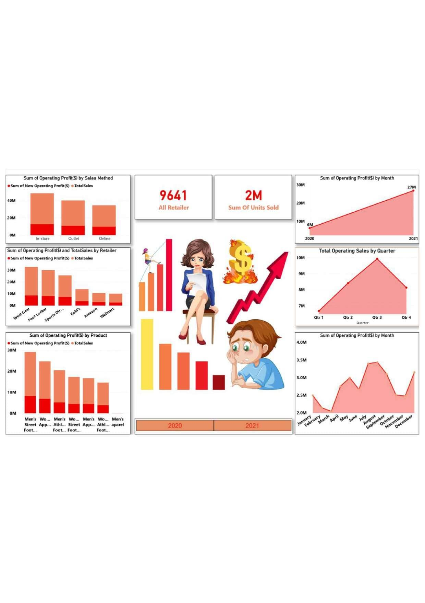
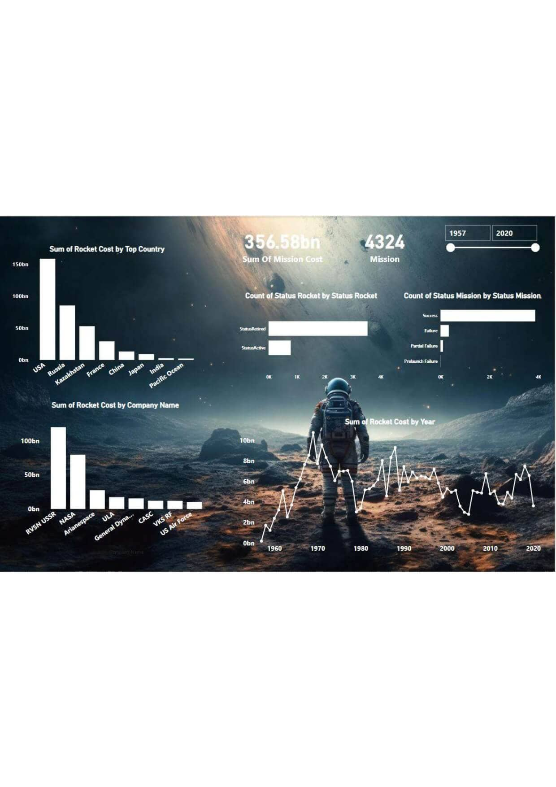
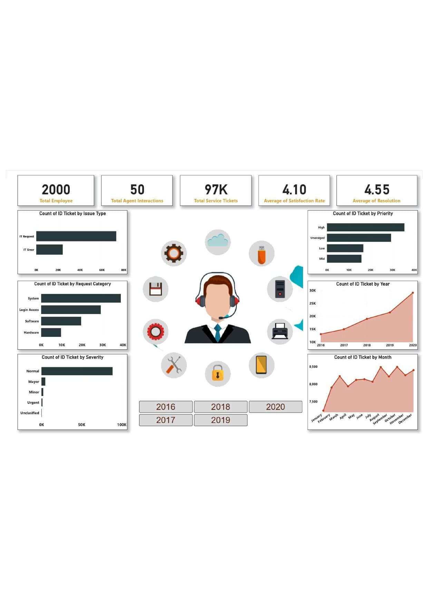

معرض المشاريع
هنا يمكنك تصفح مجموعة من المشاريع التي قمت بتنفيذها، والتي تظهر قدرتي على تحويل البيانات إلى رؤى قيمة.

تحليل أداء المبيعات لمتجر كبير
لوحة بيانات تفاعلية في Power BI لتحليل أداء المبيعات وتحديد المنتجات والمناطق الأكثر ربحية لدعم اتخاذ القرار.
عرض تفاصيل المشروع

تحليل مهمات الفضاء العالمية
تحليل شامل لتاريخ المهمات الفضائية منذ عام 1957، مع التركيز على الدول والشركات الرائدة والتكاليف ومعدلات النجاح.
عرض تفاصيل المشروع

تحليل تذاكر خدمة العملاء (IT )
قياس رضا العملاء ومعدل حل المشكلات لتحسين أداء فريق الدعم الفني.
عرض تفاصيل المشروع